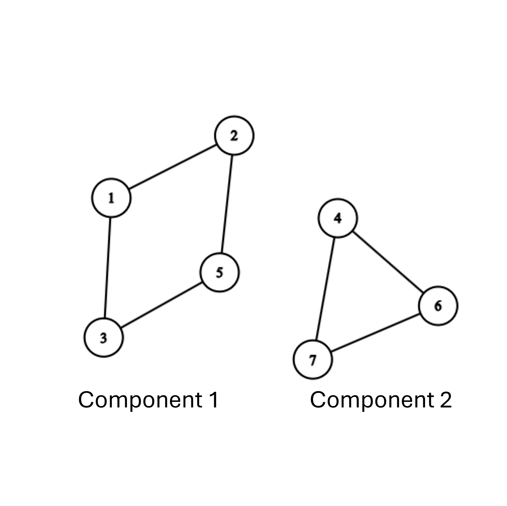
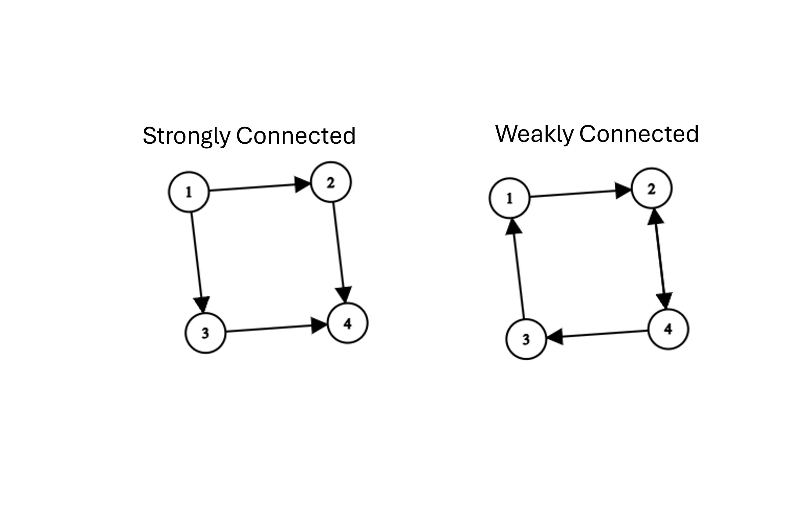
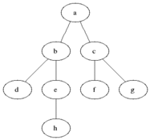

Chapter 3 Chapter 3: Connectivity & Graph Exploration
3.1 3.1 Graph Connectivity
Understanding how vertices are linked to one another is a fundamental concept in graph theory. Connectivity determines whether information, traffic, or signals can flow between different points in a network.
3.1.1 Connectivity in Undirected Graphs
In an undirected graph \(G = (V, E)\), two vertices \(u\) and \(v\) are connected if there exists a walk between them.
Reachability Relation (\(\sim\)): We define a relation \(u \sim v\) if there exists a walk starting at vertex \(u\) and ending at vertex \(v\).
Equivalence Classes: The relation \(\sim\) is an equivalence relation because it satisfies three key properties:
Reflexive: \(u \sim u\) (a trivial walk of length \(0\) exists from \(u\) to itself).
Symmetric: If \(u \sim v\), then \(v \sim u\) (since edges in undirected graphs can be traversed in either direction).
Transitive: If \(u \sim v\) and \(v \sim w\), then \(u \sim w\) (by concatenating the two walks).
Because \(\sim\) is an equivalence relation, it partitions the set of vertices \(V\) into disjoint equivalence classes called connected components.

A graph is connected if it consists of exactly one connected component (meaning every vertex can reach every other vertex). Otherwise, it is disconnected.
3.1.2 Strong Connectivity in Directed Graphs
In directed graphs (digraphs), edge directions matter. The existence of a path from \(u\) to \(v\) does not guarantee a path from \(v\) to \(u\).
Strong Connectivity: Two vertices \(u\) and \(v\) in a digraph are strongly connected if there exists a directed walk from \(u\) to \(v\) and a directed walk from \(v\) to \(u\).
Strongly Connected Component (SCC): A maximal subgraph where every pair of vertices is mutually reachable.

3.1.2.1 Computing Strongly Connected Components
To formally define the SCC containing a vertex \(u\), denoted as \(C(u)\), we look at two reaching sets:
Forward Reachable Set (\(R_+(u)\)): The set of all vertices \(v\) reachable from \(u\) via directed paths.
Backward Reachable Set (\(R_-(u)\)): The set of all vertices \(v\) that can reach \(u\) via directed paths.
The strongly connected component of \(u\) is the intersection of these two sets:
\[C(u) = R_+(u) \cap R_-(u)\]
R+(u): Nodes u can reach
\
\ Intersection: C(u)
v /
( u )
^ \
/ \
/ v
R-(u): Nodes that can reach u
Algorithmic Insight: Computing \(R_+(u)\) is straightforward—we run a standard search starting at \(u\). To compute \(R_-(u)\), we find all nodes that can reach \(u\) in \(G\), which is equivalent to finding all nodes reachable from \(u\) in the transpose graph \(G^T\) (where every directed edge is reversed). Matrix-wise, \(G^T\) corresponds to the transpose of the adjacency matrix, \(A^T\).
3.2 Graph Exploration Algorithms
Graph exploration algorithms systematically visit the vertices and edges of a graph. They form the foundation for solving complex problems such as finding shortest paths, cycle detection, and identifying connected components.
3.2.1 Generic Search Algorithm
The generic search algorithm maintains a set \(L\) of candidate vertices to explore.
3.2.1.1 Generic Search Steps
Initialize a set of discovered vertices \(L = \{s\}\), where \(s\) is the starting vertex. Mark \(s\) as visited.
While \(L\) is not empty:
Select an arbitrary vertex \(u \in L\).
Find an unvisited neighbor \(v\) adjacent to \(u\).
If such a \(v\) exists, mark \(v\) as visited and add \(v\) to \(L\).
If no unvisited neighbors exist for \(u\), remove \(u\) from \(L\).
Complexity: Takes \(O(V)\) main steps, but the specific execution order depends entirely on the data structure used to manage \(L\).
3.2.2 Depth-First Search (DFS)
Depth-First Search explores a graph by going as deep as possible along each branch before backtracking.
Data Structure: Last-In, First-Out (LIFO) Stack (or recursion).
Strategy: Pick a start vertex, move to an unvisited neighbor, and immediately continue exploring from that new neighbor. When a vertex has no unvisited neighbors, backtrack to the previous vertex.
DFS Exploration Order
(1)
/ \
[1] [4]
/ \
(2) (4)
/
[2]
/
(3)

3.2.2.1 DFS Algorithm Steps
- Push the starting vertex \(s\) onto the stack.
- While the stack is not empty:
Pop the top vertex \(u\).
If \(u\) is not visited, mark it as visited.
Push all unvisited neighbors of \(u\) onto the stack.
Time Complexity: \(O(V + E)\) when using an adjacency list.
Primary Applications: Detecting cycles, topological sorting, finding strongly connected components, and pathfinding in mazes.
3.2.3 Breadth-First Search (BFS)
Breadth-First Search explores the graph layer-by-layer, visiting all immediate neighbors of a vertex before moving deeper.
Data Structure: First-In, First-Out (FIFO) Queue.
Strategy: Visit the starting node, then visit all of its direct neighbors (distance 1), then all neighbors of those neighbors (distance 2), and so on.
BFS Exploration Order
(1) <-- Level 0
/ \
[1] [1]
/ \
(2)-------(3) <-- Level 1
|
[2]
|
(4) <-- Level 2

3.2.3.1 BFS Algorithm Steps
- Enqueue the starting vertex \(s\) into the queue and mark it as visited.
- While the queue is not empty:
Dequeue the front vertex \(u\).
For each unvisited neighbor \(v\) of \(u\):
Mark \(v\) as visited.
Enqueue \(v\).
Time Complexity: \(O(V + E)\) when using an adjacency list.
Primary Applications: Finding the shortest path in unweighted graphs, finding connected components, and computing graph diameter.
3.3 Comparison of Exploration Algorithms
| Algorithm | Data Structure | Traversal Strategy | Edge Types Discovered | Time Complexity |
|---|---|---|---|---|
| Generic Search | Unordered Set \(L\) |
Arbitrary selection | General reachability | \(O(V)\) main steps |
| DFS | LIFO Stack | Deep exploration via backtracking | Tree edges, Back edges, Forward edges, Cross edges | \(O(V + E)\) |
| BFS | FIFO Queue | Level-by-level exploration | Tree edges, Cross edges | \(O(V + E)\) |
3.4 Chapter 3 Exercises
Strongly Connected Components: Given a directed graph \(G\), explain why taking the intersection \(R_+(u) \cap R_-(u)\) guarantees that all vertices in the resulting set belong to the same strongly connected component.
Algorithm Execution: Trace both BFS and DFS on a simple cycle graph \(C_5\) starting at vertex \(v_1\). List the order in which vertices are visited for each algorithm.
Shortest Paths: Prove that the tree generated by running Breadth-First Search (BFS) on an unweighted graph provides the shortest path (in terms of edge count) from the start vertex to all other reachable vertices.
Graph Transpose: Show that if \(A\) is the adjacency matrix of a digraph \(G\), then the transpose matrix \(A^T\) represents the graph \(G^T\) where all edge directions are reversed.